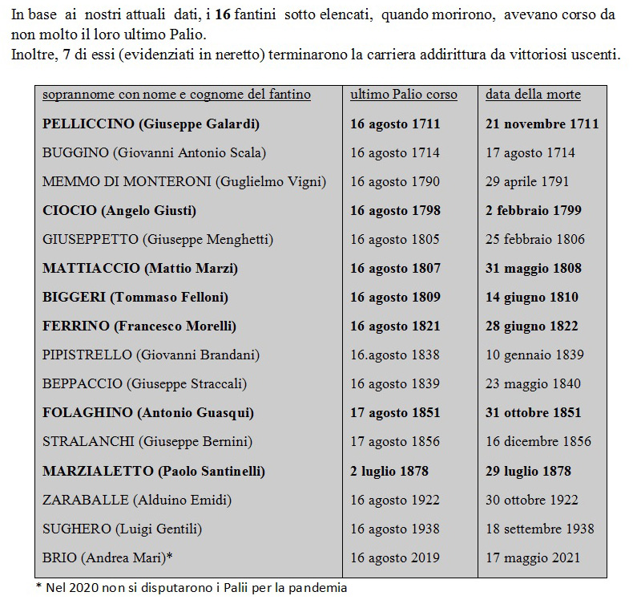
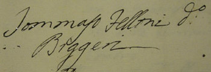

|
(Biggèri) 10/34 Nato a Siena il 20 dicembre 1768 (vedi battesimo) Morto a Siena il 14 giugno 1810 (vedi atto di morte) Sposatosi in S.Eugenia il 25 maggio 1788 
1 Palio straordinario. - Secondo il Sergardi avrebbe corso anche il Palio ordinario dell'agosto 1804 nel Valdimontone. - È l'unico fantino ad aver vinto 3 Palii nello stesso anno: nella Torre, nel Leocorno e nella Lupa nel 1809. - Come fantino prima dette la cuffia alla Lupa vincendo per l'Aquila il 2 luglio 1796, poi la tolse alla stessa contrada di Vallerozzi, vincendo il 16 agosto 1809 (cfr.). - Ha la peculiarità di aver vinto gli ultimi 3 Palii della sua carriera, primato condiviso con Folaghino (Antonio Guasqui) ed entrambi morirono prima di poter prendere parte al successivo palio.    

Esordisce vittorioso nel 1783 quando ancora era un ragazzetto poco più che quattrodicenne. Fantino fra i più famosi negli anni a cavallo fra il Settecento e l'Ottocento, è da ricordare non tanto per il pur cospicuo numero delle vittorie, quanto per aver riportato tre vittorie nel corso dello stesso anno, 1809, che fu anche l'ultimo anno della sua carriera, infatti
si ha notizia che morì per una colica fulminante, nella casa di Giulio Landi Barbiere posta al Cantone della Cattadrale in Via di Cartagine. Il suo spirito battagliero lo rese protagonista di scontri particolarmente animosi con altri fantini: nel luglio 1787 riuscì nell'impresa di far perdere il palio a Dorino, dato per sicuro vincitore, trattenendolo per quasi tre giri. Nell'agosto 1788 si azzuffò con Marcaccio non solo scambiandosi nerbate per tutto il tempo della corsa, ma anche nell'immediato dopo Palio, tanto che i due fantini finirono in carcere e lì trattenuti per una notte. La detenzione fu una buona medicina propiziando la riconciliazione che avvenne subito dopo la liberazione, sancita con un'abbondante colazione consumata all'Osteria delle Donzelle. Infine nel luglio 1800 fu il Gobbo Chiarini a vendicare Dorino e Marcaccio tenendolo sotto nerbo per tutta la carriera. Il carattere battagliero, tuttavia non sempre si associò alla fedeltà al giubbetto indossato. È difficile immaginare che nel 1804 Biggeri non fosse venduto a dar credito a quanto ci racconta il Bandini nel suo Diario: "3 luglio. Il Palio in giro. In questa mattina il Palio del Montone è in giro ed in compagnia di esso vi erano Biggèri fantino della Tartuca, Vecchia della Pantera ed altri che erano tutti di balla".   Stato delle Anime di S.Matteo ai Tufi, anno 1806  Matrimonio Corse pure un Palio a Lucca e precisamente il 21 settembre 1784, fugando così ogni residuo dubbio sul suo nome di battesimo. In quell'occasione infatti il fantino venne segnato con il nome di Tommaso
Felloni, insieme a quello di Isidoro Bianchini altro protagonista di quella corsa.  
 |